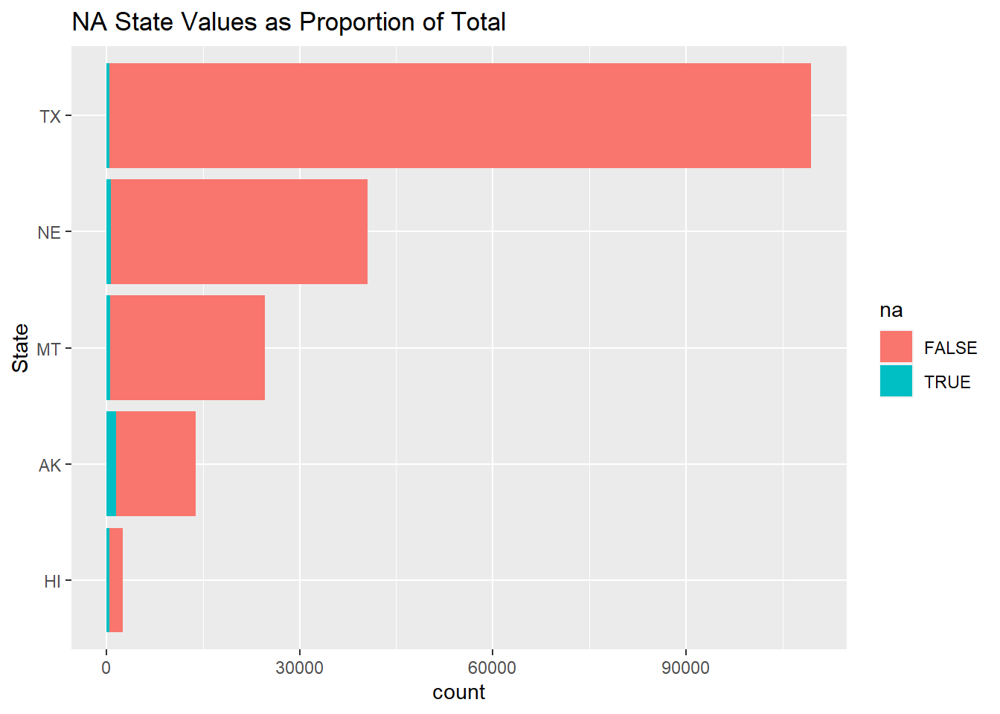

Chapter 4 Missing values
The only dataset with missing values was the Trips by Distance data from the U.S. DOT Bureau of Transportation Statistics.
So, working with that set, let us find some NA’s
| level | na_s |
|---|---|
| Number of NA’s National: | 0 |
| Number of NA’s State: | 0 |
| Number of NA’s County: | 5779 |
We can see here that the NA values only occur at the county level. So, let’s find out where those NA’s are hiding.
## Date State.FIPS State County.FIPS
## Min. :2020-01-22 Min. : 1.00 TX :109474 Min. : 1001
## 1st Qu.:2020-05-08 1st Qu.:18.00 GA : 68529 1st Qu.:18177
## Median :2020-08-24 Median :29.00 VA : 57323 Median :29176
## Mean :2020-08-24 Mean :30.28 KY : 51720 Mean :30384
## 3rd Qu.:2020-12-10 3rd Qu.:45.00 MO : 49565 3rd Qu.:45081
## Max. :2021-03-27 Max. :56.00 KS : 45255 Max. :56045
## (Other):972336
## County Population.Staying.at.Home
## Washington County: 12930 Min. : 10
## Jefferson County : 10775 1st Qu.: 2185
## Franklin County : 10344 Median : 5221
## Jackson County : 9913 Mean : 25984
## Lincoln County : 9913 3rd Qu.: 15053
## Madison County : 8189 Max. :4131225
## (Other) :1292138 NA's :5779
## Population.Not.Staying.at.Home Number.of.Trips Number.of.Trips..1
## Min. : 117 Min. : 227 Min. : 0
## 1st Qu.: 8826 1st Qu.: 37386 1st Qu.: 8051
## Median : 20719 Median : 88712 Median : 19530
## Mean : 78593 Mean : 325210 Mean : 82383
## 3rd Qu.: 54017 3rd Qu.: 231308 3rd Qu.: 52890
## Max. :8636354 Max. :43031242 Max. :12335889
## NA's :5779 NA's :5779 NA's :5779
## Number.of.Trips.1.3 Number.of.Trips.3.5 Number.of.Trips.5.10 Number.of.Trips.10.25
## Min. : 0 Min. : 0 Min. : 0 Min. : 0
## 1st Qu.: 8345 1st Qu.: 3548 1st Qu.: 4909 1st Qu.: 5829
## Median : 21520 Median : 9989 Median : 12433 Median : 13901
## Mean : 80587 Mean : 39327 Mean : 49127 Mean : 47670
## 3rd Qu.: 57947 3rd Qu.: 28213 3rd Qu.: 34078 3rd Qu.: 35061
## Max. :11401040 Max. :5423126 Max. :6535454 Max. :5844180
## NA's :5779 NA's :5779 NA's :5779 NA's :5779
## Number.of.Trips.25.50 Number.of.Trips.50.100 Number.of.Trips.100.250
## Min. : 0 Min. : 0 Min. : 0
## 1st Qu.: 3013 1st Qu.: 1184 1st Qu.: 424
## Median : 6412 Median : 2598 Median : 967
## Mean : 16454 Mean : 6086 Mean : 2678
## 3rd Qu.: 14435 3rd Qu.: 5742 3rd Qu.: 2301
## Max. :1859953 Max. :555732 Max. :356594
## NA's :5779 NA's :5779 NA's :5779
## Number.of.Trips.250.500 Number.of.Trips...500
## Min. : 0.0 Min. : 0.0
## 1st Qu.: 57.0 1st Qu.: 11.0
## Median : 166.0 Median : 41.0
## Mean : 574.5 Mean : 323.7
## 3rd Qu.: 442.0 3rd Qu.: 150.0
## Max. :90947.0 Max. :125691.0
## NA's :5779 NA's :5779From the summary we can see that there is an equal 5779 NA’s for each numeric column thus, upon further inspection, 5779 rows are fully incomplete for trips data. So, let’s isolate those rows.
Frist, since this data is a timeseries, let’s check the dates to see if there is a pattern.
| Date | count |
|---|---|
| 2021-03-26 | 1228 |
| 2020-11-29 | 113 |
| 2020-09-06 | 101 |
| 2020-07-04 | 99 |
| 2020-07-03 | 93 |
| 2020-07-02 | 91 |
| 2020-09-07 | 88 |
| 2020-07-01 | 87 |
| 2020-06-30 | 85 |
| 2020-06-29 | 79 |
From this we see the vast majority of NA occur on 2021-03-26, which is one day before the ending day of the dataset. Thus, we can conclude that the rows for second to last day have been created for data input but have not updated by the time of data procurement. Thus, removing the last two days from the dataset will reduce potential error and will not affect analysis of mobility on COVID-19 rates from January 2020 to March 2021. Now to get the total number of days in the dataset.
## Time difference of 428 daysHere we can see that there are 428 total days in the dataset so, lets narrow down the search to counties with > 10% of missing data. (10% is chosen because 90% of available data could still provide accurate insights for trips data) here is a sample:
| State | County | n |
|---|---|---|
| AK | Aleutians East Borough | 62 |
| AK | Bristol Bay Borough | 353 |
| AK | Haines Borough | 101 |
| AK | Lake and Peninsula Borough | 295 |
| AK | Skagway Municipality | 141 |
| AK | Yakutat City and Borough | 395 |
There are 22 counties with high rates of NA values. Thus, these are the counties that could be most problematic when analyzing at a county scale. So, lets save the data frame of these top NA violators for future reference when further micro analysis is desired within these areas.
Now to consider, would the NA values from certain counties affect State level analysis? To find out let’s plot the states with county NA values.

Here we can see the states with the majority of the NA values, lets pick the top 5 (AK, NE, MT, TX, HI) and see how much the NA values might impact the aggregate state values.
We can see by the above stacked bar plot that the NA values account for a negligible amount of total values from each of the top NA states. Thus, the NA values should be of note, but of not much concern when considering total trips by distance for each state.
With this analysis of NA values, the decision to leave the NA rows in the dataset is made for continuity of county timelines.